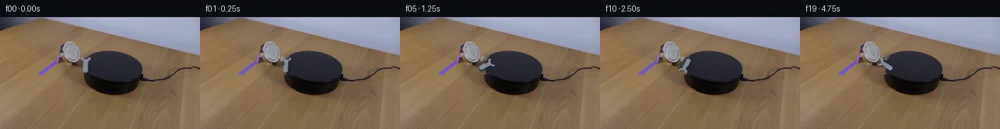

![首帧]()

Round 00
2026-11-05T02:37:38.039078+00:00像素候选变化代码 +183/−0inspection 更新
pixels ed0407886145a6ab · code b8ef6e3c3717244b
查看本轮 generate.py 真实 diff
--- previous/generate.py +++ current/generate.py @@ -0,0 +1,183 @@ +from pathlib import Path + +import cv2 +import numpy as np +from PIL import Image, ImageDraw + +import artifact_io + + +ROOT = Path(__file__).resolve().parent +W, H = 256, 144 +PIVOT = (109.5, 61.5) +ANGLES = [0, 2, 8, 20, 38, 61, 87, 115, 145, 175, + 205, 233, 257, 275, 287, 294, 298, 300, 300, 300] + + +def make_wrench_layer(source): + """Extract the photographed blue-gray wrench into a soft alpha layer.""" + b, g, r = cv2.split(source[:, :, ::-1]) + + # The two polygons tightly cover the handle and open jaw in frame 00. + geometry = np.zeros((H, W), np.uint8) + cv2.fillPoly(geometry, [np.array([ + [106, 53], [112, 53], [113, 56], [112, 69], [111, 71], + [107, 71], [105, 69], [106, 56]], np.int32)], 255) + cv2.fillPoly(geometry, [np.array([ + [103, 50], [106, 51], [109, 54], [111, 54], [113, 51], + [116, 51], [117, 54], [114, 58], [111, 57], [108, 56], + [105, 56], [103, 53]], np.int32)], 255) + + # Metal is cooler/bluer than the brown table and brighter than the platform. + metal = ((b.astype(np.int16) - r.astype(np.int16) >= 6) & + (b.astype(np.int16) - g.astype(np.int16) >= 4) & + (b >= 70)).astype(np.uint8) * 255 + mask = cv2.bitwise_and(geometry, metal) + mask = cv2.morphologyEx(mask, cv2.MORPH_CLOSE, np.ones((2, 2), np.uint8)) + + # Preserve the photographed interior, adding only a subpixel fringe for rotation. + alpha = cv2.GaussianBlur(mask.astype(np.float32) / 255.0, (3, 3), 0.48) + alpha[mask == 255] = np.maximum(alpha[mask == 255], 0.94) + premul = source.astype(np.float32) * alpha[:, :, None] + return alpha, premul + + +def platform_left_edge(y): + # Measured left contour of the foreshortened black top ellipse. + if y <= 48: + return 117.0 + if y <= 56: + return 114.0 - 0.62 * (y - 49) + if y <= 69: + return 109.1 + return 109.1 + 0.22 * (y - 69) + + +def make_clean_plate(source, alpha): + """Reconstruct only the few pixels hidden by the frame-00 wrench.""" + plate = source.astype(np.float32).copy() + erase = cv2.dilate((alpha > 0.03).astype(np.uint8), np.ones((3, 3), np.uint8)) + ys, xs = np.nonzero(erase) + for y, x in zip(ys, xs): + boundary = platform_left_edge(y) + if x >= boundary + 0.65: + # Sample the same scanline farther inside the stationary platform. + sx = min(W - 1, max(118, x + 11)) + value = source[y, sx].astype(np.float32) + elif x >= boundary - 0.65: + # One-pixel antialiased table/platform boundary. + tx = max(0, x - 7) + px = min(W - 1, max(118, x + 11)) + value = 0.45 * source[y, tx] + 0.55 * source[y, px] + else: + # Continue the local table/magnet contact shadow horizontally. + samples = source[y, max(0, x - 8):max(1, x - 3)].astype(np.float32) + value = np.median(samples, axis=0) + plate[y, x] = value + + # Confine a tiny smoothing pass to the reconstructed pixels, leaving all other + # photographed pixels bit-identical. + smooth = cv2.GaussianBlur(plate, (3, 3), 0.55) + edge = cv2.GaussianBlur(erase.astype(np.float32), (3, 3), 0.45)[:, :, None] + plate = plate * (1.0 - edge) + smooth * edge + return np.clip(plate, 0, 255) + + +def warp_about_pivot(array, angle, interpolation=cv2.INTER_CUBIC): + # OpenCV uses positive CCW angles; negative is clockwise in the image plane. … diff truncated; 96 more lines …